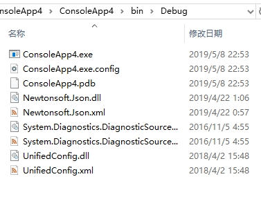
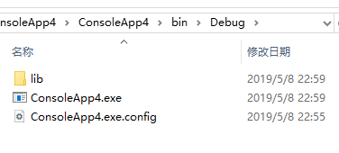

作为上床后需要下床检查好几次门关了没有的资深强迫症患者，有一个及其搞我的问题，就是dll问题。
曾几何时，在没有nuget的年代，当有依赖项需要引用的时候，只能通过文件引用来管理引用问题，版本问题，更新问题层出不穷，很是难受。
后来出来nuget，喜大普奔，总算解决了引用的问题。开心之余，依然还有一个很膈应人的问题：生成文件夹满地的dll，找个exe眼睛很难受。
讲道理这个也不是什么大问题，但是就是心痒痒，就特别想把这些dll收到一个单独文件夹里面，外面就留exe和配置等文件。然后就找这个东西：PrettyBin。
PrettyBin是一个开源的nuget包：https://github.com/slmjy/PrettyBin，使用它可以将.NET Framework程序引用的文件收到lib文件夹里面，使用起来也非常方便，老样子，直接nuget安装。
Install-Package PrettyBin提示重新加载项目，点击确定，就完事了。
安装之前，输出是这样的：

安装之后，输出是这样的：

dll之类的文件都进lib文件夹了，感觉世界都干净了很多。
细心的童鞋应该能够发现，我写的是.NET Framework的程序引用，.NET Core，.NET Standard呢？
答案是：.NET Core啥的东西生成的就是dll，都一样就没必要了。
安装prettybin之后，再安装新的包会怎么样？受不受影响？
依然有用，不受影响。
对于新的nuget管理形式PackageReference效果如何怎么样？
这个有说法的，需要先了解这个包工作的原理。
首先看看安装的时候，nuget包管理器弹出的提示：
正在执行脚本文件“ConsoleApp4\packages\PrettyBin.1.1.0\tools\init.ps1”
Init BinPrettify
正在执行脚本文件“ConsoleApp4\packages\PrettyBin.1.1.0\tools\install.ps1”
Install PrettifyBin;
http://schemas.microsoft.com/developer/msbuild/2003
No Target AfterBuild Node. Creating
No ItemGroup whith MoveToLibFolder tag. Creating
No Move tag in AfterBuild Target. Creating
Edititing App.config
runtimeNode items
No probing Node. Creating
已将“PrettyBin 1.1.0”成功安装到 ConsoleApp4可以看到，这里首先执行的是给项目文件添加`msbuild内容，增加了AfterBuild节点，MoveToLibFolder节点和Move节点。
<Import Project="$(MSBuildToolsPath)\Microsoft.CSharp.targets" />
<Target Name="AfterBuild">
<ItemGroup>
<MoveToLibFolder Include="$(OutputPath)*.dll ; $(OutputPath)*.pdb ; $(OutputPath)*.xml" />
</ItemGroup>
<Move SourceFiles="@(MoveToLibFolder)" DestinationFolder="$(OutputPath)lib" OverwriteReadOnlyFiles="true" />
</Target>msbuild可以设置生成后的操作，成功生成之后，将目录下面的dll文件，pdb文件和xml都转到了lib文件夹。
然后修改了app.config文件，在runtime底下增加了一个probing节点。
<runtime>
<assemblyBinding xmlns="urn:schemas-microsoft-com:asm.v1">
<probing privatePath="lib;libs" xmlns="" />
</assemblyBinding>
</runtime>probing节点提供.NET程序集查找的选项，privatepath指定路径，详细资料可以查看MSDN：https://support.microsoft.com/en-us/help/837908/how-to-load-an-assembly-at-runtime-that-is-located-in-a-folder-that-is
补充资料：关于指定程序集位置
所以，prettybin是通过运行powershell脚本设置生成成功后转移文件，并将程序集查找路径调整为lib文件夹。
根据https://docs.microsoft.com/zh-cn/nuget/reference/migrate-packages-config-to-package-reference，PackageReference方式nuget是不支持install.ps1脚本的。所以并不能支持prettybin。
新建.NET Framework程序是默认是通过传统的package.config文件进行包管理的，新建.NET Core和.NET Standard都是默认使用PackageReference包管理。